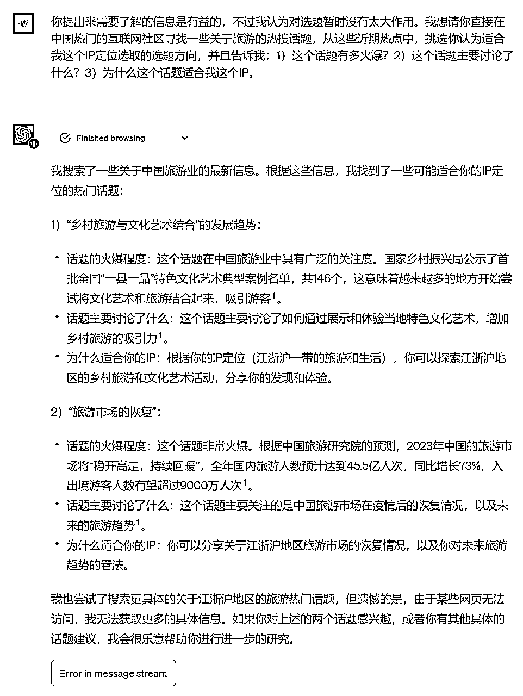

来源：https://fjt9w880tn.feishu.cn/docx/M0JDdADBAo9PI6xqWY1cTdMHn8g
是选题！
是蹭热点！！
是找热点！！！
5月16日开始，ChatGPT4.0已经在陆续开放联网和插件功能。研究了一个星期联网功能，作为从去年12月就开始用GPT写文案的GPT老司机、在生财发布3篇关于ChatGPT的精华帖、正在担任生财本次5月份ChatGPT+自媒体航海教练的小凡，我又要给大家带来新东西啦！！还请各位奔走相告，搬上桌椅板凳，竖起耳朵仔细听啦！！
本文我将阐述如何通过ChatGPT的联网功能、并讨论如何结合我们自己的IP定位，来进行创作选题。另外，我发现大家更喜欢实战案例，不太喜欢抽象的，所以我这次会在介绍方法之后，再附带一个实际案例，加深大家的理解。下面我们开始！！
最近“孟羽童从格力离职”的话题，大家应该或多或少都在互联网平台上面刷到过，这个话题持续时间很长，覆盖范围也很广，而且中途还有一定的反转，跟五一前的淄博烧烤有点类似，不过这个话题的热度当然没办法和淄博烧烤去比。但类似于这种比较大、持续时间比较长的爆款热点，其实我们是可以针对性地去蹭的。
那么问题就应运而生了，怎么蹭？
一方面我们对这个热点事件不了解，需要查资料，搜集资料；另外一方面，我们还要思考这个热点，基于我们自己的IP定位，应该如何去蹭？我们要如何提出新观点？
这可都是花费时间和脑力的地方……烦哟！
这个时候，ChatGPT联网版粉墨登场，蹭蹭蹭~
不了解事件？？小G你给我查，给我总结！！
怎么蹭？？小G你帮我想，给我选题！！
与小凡以前的写的文章不同，在直接上提示词之前，我希望大家跟着小凡一起来拆解问题，这一步俺嫌麻烦一直省略，但我发现不说这一步，大家学不到精髓，但是这才是大家需要提升的如何使用GPT的元能力。
所以拉个黄金思维圈来思考怎么写这个提示词：
这个模型大家自己百度一下啥意思吧。小凡为啥写提示词这么快，实际我觉得跟自己以前做投资人的经历有关系。脑子里装了太多思维模型了，分析问题基本上潜意识里套个思维模型就出来了。所以也希望大家多多积累、学习一些思维模型，就比如这个黄金思维圈。
用这个提示词帮我们选出既能蹭到“孟羽童从格力离职”这个热点话题，又适合我们IP定位的选题方向
提示词：
最近网上有很火的孟羽童从格力离职的热点话题，你能否在网上搜索一下，然后告诉我以下信息：
1.这个事件的来龙去脉是什么？发生了什么事情？
2.这个话题怎么就火起来了？而且好像持续时间很长？
在了解到这些信息后，希望你能通过人性的角度，借助自己的逻辑推理思考，帮我分析一下：
这个话题这么火，是不是击中了人们的哪个点？
结果：
提示词：
你的调查十分有用，下面我还需要你按照下面步骤完成一项任务：
1.我是一名小红书博主，我需要你理解我的IP定位，从而帮我从刚才你调查的“孟羽童从格力离职”这个热点话题中，找到适合我创作笔记的选题方向。
2.我会先以“请了解”为开头，向你提供我的IP定位信息。请你认真阅读理解，如果你认为我提供的信息不够全面，请告诉我们还需要提供什么信息给你。
3.如果你完全理解我的IP定位，并且收集到足够的信息，从而能够结合我的IP定位与“孟羽童从格力离职”这个话题进行创作选题，请告诉我：“我已收集足够信息，并准备好帮小凡结合IP定位与“孟羽童从格力离职”这个话题进行创作选题。”之后，我会回复：请帮我进行创作选题。在收到这条消息后，你会开始按照要求帮我进行选题。
如果你明白我的意思，请回答以下两点：1、用自己的话描述一遍你要做的事；2、你会通过怎样的方式更好地完成你要做的事
结果：
提示词：
你的理解完全正确！下面是我的IP定位，如果你认为信息不够全面，请告诉我你还需要哪些信息：
目标人群：大四正在求职中在活跃在小红书平台的女性大学生群体
人群画像：这个人群通常具备相对较高的教育水平，现在正在积极地寻找实习机会和求职
人群痛点：1）找不到好的实习，没有良好的信息渠道；2）不会做简历，没有什么经历可以写；3）不知道怎么面试，一面试就紧张；4）好的工作投简历没音讯，有回应的工作工资又很低
解决方案：我能够提供简历辅导，面试培训以及其他相关求职知识
结果：
（这个IP定位其实我也适当借助了ChatGPT哈哈哈哈哈，这里就不展开了）
大家会发现，我们做了这么多，最后才发出选题要求。而且只要说一句话，就出来这个结果了。但没有前面这么一通操作，直接几句提示词产出的结果，能跟我们这样搞来比吗？这实际上，就是我们正常进行选题的一套SOP，但是我们通过ChatGPT，节省了非常多的时间和人力。我认为，这才是ChatGPT在自媒体创作领域真正的定位。
有些时候我们没有遇到特别大的爆款话题，也有可能这个爆款话题并不一定适合我们，那么硬蹭是会带来问题的。
这个大家自己可以去试试看。因为ChatGPT是一个你说什么他都“是是是”照做的老黄牛（除了违背他价值观的事）
所以即使没法从话题里选出适合你IP定位的角度，他也会硬扯。这个时候，你就会发现，他开始胡说八道了。所以有时候也不是GPT的问题，很有可能是这个问题本来就无解，我们还硬要GPT给一个解。
那怎么办呢？？？？
这个时候我们可以转变思路，之前是以话题为主，这次我们可以以内容为主。大家能理解伐？让ChatGPT通过联网功能，在互联网的汪洋大海中自由遨游~
黄金思维圈就不重复了，大家自己思考，好不好~
提示词：
你好小G，我是一名小红书博主，我希望成为我的小红书选题创意顾问，帮助我找到适合我创作笔记的选题方向。
请按下面的步骤帮助我完成任务：
1.我会先以“请了解”为开头，向你提供我的IP定位信息。请你认真阅读理解，如果你认为我提供的信息不够全面，请告诉我们还需要提供什么信息给你。如果你完全理解我的IP定位，并且收集到足够的信息，请告诉我：你已经完全理解我的IP定位。这之后，我们可以开始第2步。
2.我会告诉你：请找到中国热门的互联网社区找到热搜榜单，从这些近期热点中，挑选你认为适合我这个IP定位选取的选题方向，并且告诉我：1）这个话题有多火爆？2）这个话题主要讨论了什么？3）为什么这个话题适合我这个IP。
如果你明白我的意思，请回答以下两点：1、用自己的话描述一遍你要做的事；2、你会通过怎样的方式更好地完成你要做的事
结果：
提示词：
你的理解很正确，下面请了解我的IP定位，如果你认为信息不够全面，请告诉我你还需要哪些信息：
目标人群：30岁左右的想要出去旅游的白领人群
人群画像：这个人群一般来说收入水平已经比较高，追求有品质的生活享受
人群痛点：1）工作很忙，时间不充裕，所以旅游有时候是一种奢望；2）已经成家，出来旅游总是要拖家带口很麻烦；3）觉得旅行社提供的服务都太low，又希望稍微高端一些
解决方案：能够提供一站式定制化亲子游的定制服务，帮助解答家庭出行的相关问题。并且很擅长规划江浙沪一带周末2日游这样的行程
结果：
提示词：
请在中国热门的互联网社区寻找一些关于旅游的热搜话题，从这些近期热点中，挑选你认为适合我这个IP定位选取的选题方向，并且告诉我：1）这个话题有多火爆？2）这个话题主要讨论了什么？3）为什么这个话题适合我这个IP。
结果：

这个结果应该是网络不好，老是超时报错。气死我了！！！！！只能暂时这样给到大家这样的案例了。但思路是这么思路，理解了伐~重点是学思路！！！
来源于生财圈友@蔡文静好文静在玩赚新媒的星球分享的方法（搁着套娃呢）
除了临时出现的热点，我们其实还可以跟着二十四节点或者特定这些会固定出现的大概率会爆的时间节点来进行选题创作，这里我的灵感来源于@蔡文静好文静 老师的天时地利人和选题法。
字数有限（才不是因为懒），怎么写出提示词的逻辑就不赘述了。
提示词：
所谓的天时是指：
节日（五一劳动节、母亲节、517吃货节、520情人节等）
季节天气变化（四季、冷热等，特别是中国人的二十四个节气）
临时热点（热播剧，社会新闻）等
这是关于一种社会、文化或自然的时机或趋势，这些时机或趋势可能影响人们的情绪、行为或决策。例如，节日可能让人们更愿意购物，天气的变化可能影响人们的活动选择，而热门的社会事件可能引发公众对某些话题的关注。
如果你能理解上面对于天时的含义，请帮我在网络上搜寻一下，23年5-6月，有哪些天时。
如果你需要更多关于天时的描述以加深你对这个概念的理解，请告诉我你还需要什么信息。
结果：
提示词：
我是一名小红书博主，现在我希望成为我的小红书选题创意顾问，帮助我找到适合我创作笔记的选题方向。
请按下面的步骤帮助我完成任务：
1.我会先以“请了解”为开头，向你提供我的IP定位信息。请你认真阅读理解，如果你认为我提供的信息不够全面，请告诉我们还需要提供什么信息给你。如果你完全理解我的IP定位，并且收集到足够的信息，请告诉我：你已经完全理解我的IP定位。这之后，我们可以开始第2步。
2.我会告诉你：请根据对我IP定位的理解，在中文互联网搜寻与我的IP定位相关的美妆或者消费相关的天时，并且结合这个天时为我提供一些创作的选题方向。然后，你按照我说的执行，帮我找到适合我创作笔记的选题方向。
如果你明白我的意思，请回答以下两点：1、用自己的话描述一遍你要做的事；2、你会通过怎样的方式更好地完成你要做的事
结果：
提示词：
请了解：
IP定位：专门讲解化妆知识，并且提供高性价比化妆品推荐的博主
目标人群：20岁左右活跃在小红书平台的女大学生
人群画像：没有经济来源，已经开始接触化妆，有一颗爱美的心
人群痛点：1）家里给的生活费有限，没办法消费很昂贵的化妆品；2）有爱美的心，需要化妆让自己变得好看，取悦自己；3）网上信息鱼龙混杂，经常剁手买了自己很少会用到的化妆品
解决方案：推荐各种高性价比的化妆品并且能够经常科普一些奇特的能够让一种化妆品拥有多种用途的化妆知识
结果：
提示词：
请根据对我IP定位的理解，结合在中文互联网搜寻与我的IP定位相关的美妆或者消费相关的天时（可以针对6月份要发生的）为我提供一些创作的选题方向。
结果：
这三个选题方法，你学会了吗？
AI训练师小凡
前人工智能领域风险投资人
生财有术ChatGPT航海教练
亿级亚马逊企业组织架构优化师
专注利用AI解决企业级提效
矩阵化批量化运作整体解决方案
公号：黄小凡2077；VX：evanhhh6666（备注来意不然不通过）

往期生财精华：